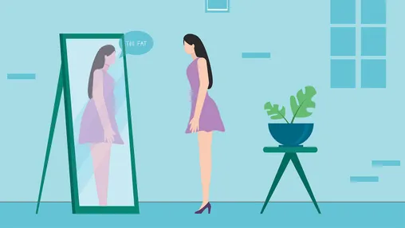

Anorexia(eating disorder)
Anorexia nervosa (often called anorexia) is an eating disorder and serious mental health condition. People who have anorexia try to keep their weight as low as possible. They may do this in different ways, such as not eating enough food, exercising too much, taking laxatives or making themselves sick (vomit). Both genders can experience anorexia but its primaerly in young women, and often start in mid teen years.
Symptoms
Some of the other signs of anorexia nervosa include: Intense fear of gaining weight, even while losing weight. Distorted view of their body, weight, size, or shape; for instance, sees self as overweight despite being severely underweight. Refusal to maintain a healthy body weight. Excessive physical activity.